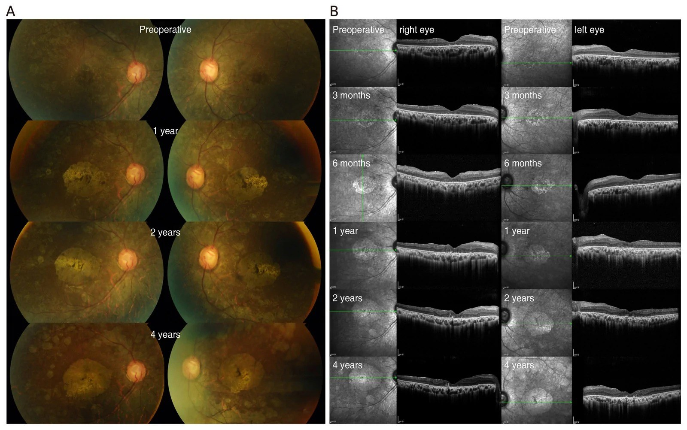
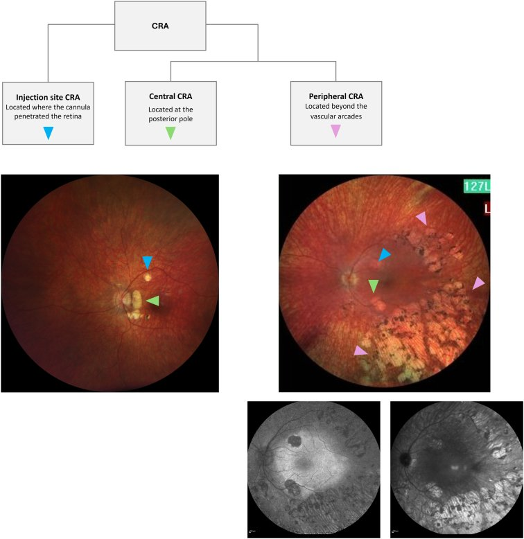
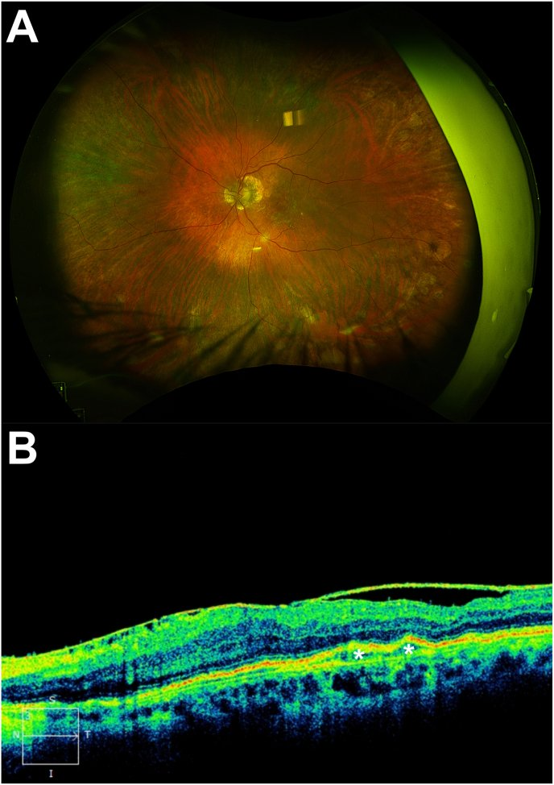
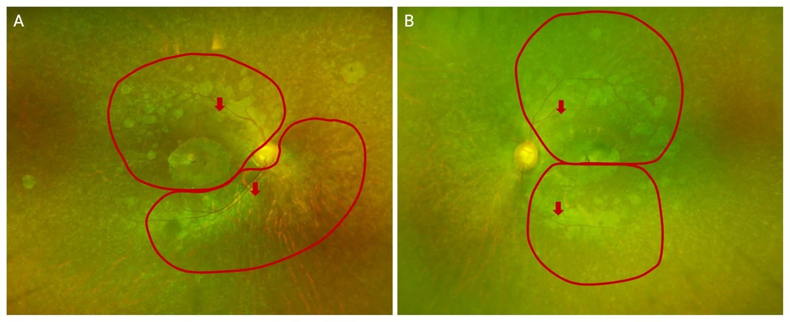

481 — Biến chứng nội nhãn sau liệu pháp gene & tiêm nội dịch kính / Intraocular complications of retinal gene therapy and intravitreal injection
Tags: pattern:bien-chung-sau-tiem vung:vong-mac vung:dich-kinh protocol:gene-therapy protocol:SD-OCT-FAF score:SUN
Mức chắc chắn (certainty): tổng hợp y văn (literature synthesis) — gộp 5 nghiên cứu mở (PMC13677208, PMC12993124, PMC12914102, PMC11843360) + 1 ca lâm sàng; chưa có ca nguyên văn của nhóm.
1. Tổng quan — vì sao mắt phản ứng sau tiêm gene & sau mũi tiêm nội dịch kính
- Hai đường đưa thuốc khác nhau, hai nhóm biến chứng khác nhau:
- Dưới võng mạc (subretinal) — voretigene neparvovec-rzyl (RPE65): phải cắt dịch kính 25G + bơm dịch tạo bong bóng (bleb) rồi tiêm vector AAV vào khoang dưới võng mạc. Biến chứng đặc trưng: teo hắc–võng mạc (chorioretinal atrophy, CRA) tại chỗ cannula chạm (touchdown) và quanh hoàng điểm, có thể tiến triển nhanh trong 3–6 tháng đầu.
- Nội dịch kính (intravitreal) — lenadogene nolparvovec (LHON) và anti-VEGF: kim qua pars plana, không cắt dịch kính. Biến chứng đặc trưng: viêm nội nhãn (endophthalmitis) nhiễm khuẩn, viêm nội nhãn vô khuẩn do vector (intraocular inflammation, IOI), tăng nhãn áp thoáng qua, đục thủy tinh thể, màng trước võng mạc (ERM).
- TẠI SAO CRA xuất hiện: bong bóng dưới võng mạc tách lớp cảm thụ ánh sáng khỏi RPE trong vài giờ → thiếu tiếp xúc, stress cơ học tại điểm tiêm, tiếp xúc nồng độ vector cao cục bộ, và có thể cả đáp ứng miễn dịch. Bằng chứng cơ chế: bóc màng giới hạn trong (ILM peeling) bảo vệ khỏi CRA tại điểm tiêm: 0/4 mắt bóc ILM so với 2/2 mắt không bóc. Một số ca CRA liên quan bơm khí dưới võng mạc (subretinal air) → gợi ý thiếu máu/tiếp xúc khí là yếu tố phụ.
- TẠI SAO CRA thấy rõ trên FAF trước khi thấy trên lâm sàng: vùng RPE mất → không còn lipofuscin phát huỳnh quang → ổ giảm huỳnh quang (hypo-autofluorescence) xuất hiện 2 tuần sau mổ, trước khi ảnh màu thấy rõ; trên OCT tương ứng mất dải ellipsoid zone (EZ) + mỏng RPE + lộ mạch hắc mạc. Đây là lý do phải chụp FAF + OCT + hồng ngoại (IR) theo lịch, không chỉ đo thị lực.
- TẠI SAO IOI do vector: capsid AAV và transgene bị nhận diện bởi miễn dịch bẩm sinh (TLR9) và miễn dịch thích ứng → viêm tiền phòng/trung gian, thường nhẹ, đáp ứng corticoid, nhưng tỷ lệ rất cao: 79,0% mắt (49/62) có ít nhất 1 biến cố IOI trong 2 năm đầu so với 10,9% (5/62) mắt giả dược; từ năm 2–5 giảm còn 16,7% (4/62). Đục thủy tinh thể gặp ở 6 người, tăng nhãn áp 3 biến cố trong 5 năm.
- TẠI SAO endophthalmitis sau tiêm: vi khuẩn từ kết mạc/mi mắt theo kim vào dịch kính; tỷ lệ 0,013–0,061% mỗi mũi tiêm, tác nhân hay gặp Staphylococcus coagulase âm và Streptococcus; biểu hiện 1–7 ngày sau tiêm (ca điển hình: 1 ngày và 4 ngày), đau + nhìn mờ + hypopyon/fibrin.
- Ngưỡng định lượng cần nhớ:
- CRA: tỷ lệ dao động 9% (7/77) → 100% (13/13) tùy loạt; đăng ký PERCEIVE 14% (27/187 mắt); khởi phát trung bình 4,7 tháng (Gange), sớm nhất 3 tháng trên OCT/IR.
- Diện tích CRA một ca 4 năm: 5,74 → 12,74 mm² (mắt phải), 4,67 → 11,52 mm² (mắt trái) — lớn nhanh nhất trong năm đầu.
- Thị lực cùng ca: 9 chữ ETDRS → 34 chữ lúc 6 tháng, vẫn cao hơn nền ở 4 năm dù CRA lan vào hoàng điểm → phân ly cấu trúc–chức năng.
- Endophthalmitis: 0,013–0,061%/mũi; 1–7 ngày; cấy âm 20–40% tùy loạt.
- IOI sau gene: 79,0% (≤ 2 năm) và 16,7% (2–5 năm); tăng nhãn áp 3 biến cố/62 mắt.
2. Mẫu hình + chẩn đoán phân biệt theo thời điểm (gamut theo trục thời gian)
- Ngày 0–7 (cấp): endophthalmitis nhiễm khuẩn; tăng nhãn áp thoáng qua do thể tích tiêm (0,05–0,1 mL); bong võng mạc/ rách võng mạc do kim; xuất huyết dịch kính; bong hắc mạc (ca B-scan dưới đây có bong hắc mạc nông).
- Tuần 1–8 (bán cấp): IOI vô khuẩn do vector (tiền phòng/trung gian), thường 1–4 tuần sau tiêm gene; viêm màng bồ đào do thuốc; đục thủy tinh thể tiến triển nhanh ở mắt đã cắt dịch kính.
- Tháng 1–12 (muộn sớm): CRA (điểm tiêm, trung tâm, ngoại vi) — đỉnh tiến triển năm đầu; ERM; tăng nhãn áp do corticoid.
- > 12 tháng (muộn): CRA tiếp tục lan chậm; đục thủy tinh thể; glôcôm; tái phát IOI muộn (hiếm); teo hắc mạc lan rộng ảnh hưởng thị trường.
- Theo đường tiêm: dưới võng mạc → CRA + bong võng mạc + bong hắc mạc; nội dịch kính → endophthalmitis + IOI + tăng nhãn áp.
3. Bảng so sánh phân biệt (ma trận đối chiếu)
| Thực thể (entity) | Hình ảnh điển hình | Chốt vào (rule-in) | Chốt loại (rule-out) | Gợi ý xác nhận |
|---|---|---|---|---|
| Endophthalmitis nhiễm khuẩn sau tiêm | B-scan: đục dịch kính + màng; ảnh màu: hypopyon, fibrin; OCT không đọc được vì môi trường đục | Đau + thị lực giảm trong 1–7 ngày + hypopyon/fibrin + vitritis | Không đau, thị lực ổn, chỉ tăng nhãn áp thoáng qua → không phải endophthalmitis | Chọc dịch kính + cấy + tiêm vancomycin 1 mg/0,1 mL + ceftazidime 2,25 mg/0,1 mL |
| IOI vô khuẩn do vector | Tế bào tiền phòng, vitritis nhẹ–trung bình, có thể phù hoàng điểm; không hypopyon | Khởi phát 1–4 tuần sau tiêm gene + đáp ứng corticoid trong 1–2 tuần + cấy âm | Cấy dương/mủ đặc/hypopyon lớn → endophthalmitis | SUN grading tế bào tiền phòng; corticoid tại chỗ/toàn thân |
| CRA tại điểm tiêm (injection-site CRA) | Ổ teo tròn, bờ rõ, đúng nơi cannula chạm, FAF giảm, OCT mất EZ/RPE | Vị trí trùng điểm tiêm (touchdown) + bờ tròn + không lan theo mạch | Tổn thương lan dọc arcade, không liên quan điểm tiêm → CRA trung tâm/ngoại vi | Chồng ảnh FAF + ảnh mổ/ video ghi điểm tiêm |
| CRA trung tâm (central/perifoveal) | Ổ teo quanh hoàng điểm, có thể vào trung tâm; IR giảm tín hiệu; OCT mỏng hắc mạc | Nằm ở cực sau, tiến triển nhanh nhất, có thể gây ám điểm cạnh trung tâm | Ổ nhỏ đúng điểm tiêm, không tiến triển → CRA tại điểm tiêm | Đo diện tích mm² trên FAF/IR mỗi 3–6 tháng |
| CRA ngoại vi (peripheral/nummular) | Ổ teo ngoài arcade mạch, dạng đồng tiền (nummular) | Ngoài arcade + nhiều ổ + bờ rõ | Teo do bệnh lý võng mạc nền (RP) → đối chiếu ảnh trước mổ | FAF + OCT ngoại vi, so ảnh nền |
| Tăng nhãn áp sau tiêm | Đo IOP; giác mạc phù nếu rất cao | IOP > 25–30 mmHg trong 30 phút đầu hoặc tăng kéo dài > 5 mmHg so nền | IOP bình thường, không phù giác mạc → loại | Đo lại 30 phút; nhỏ thuốc hạ nhãn áp; theo dõi 1 tuần |
| ERM/đục thủy tinh thể sau tiêm | OCT: màng tăng phản âm trên võng mạc; đục TTT trên đèn khe | ERM trên OCT + co kéo nhẹ; đục TTT tiến triển | Không thấy màng, không đục → loại | OCT macula; sinh hiển vi |
| Bong võng mạc/bong hắc mạc | B-scan: màng tăng âm di động, dịch dưới võng mạc; bong hắc mạc hình vòm | Màng di động + nếp gấp + vùng dịch | Màng cố định, không dịch → màng xơ | B-scan + khám đáy mắt; OCT nếu thấy được |

CRA sau tiêm dưới võng mạc: (A) ảnh màu nền – 1 năm – 2 năm – 4 năm cho thấy mảng teo hắc–võng mạc quanh hoàng điểm xuất hiện từ năm 1 và lan chậm về sau; (B) chuỗi hồng ngoại + OCT: mất EZ/RPE, mỏng hắc mạc, hình thành từ 3–6 tháng. Nguồn: Hwang S et al., Korean J Ophthalmol 2026, PMC13677208 Fig. 2, CC BY-NC 4.0.
*Đồng thuận chuyên gia 2026: CRA được chia tại điểm tiêm (injection site), trung tâm (central), ngoại vi (peripheral) — màu mũi tên tương ứng trên ảnh màu và FAF. Cách gọi thống nhất quyết định việc quy kết biến chứng và theo dõi. Nguồn: Fischer MD et al., Ophthalmol Sci 2026, PMC12993124 Fig. 1, CC BY 4.0.* B-scan 1 ngày sau tiêm aflibercept: đục dịch kính + màng (mũi tên) và bong hắc mạc nông (dấu hoa thị) — môi trường đục nên OCT không dùng được, B-scan là chốt hình ảnh. Nguồn: Rohowetz LJ et al., Am J Ophthalmol Case Rep 2026, PMC12914102 Fig. 1, CC BY 4.0.
B-scan 1 ngày sau tiêm aflibercept: đục dịch kính + màng (mũi tên) và bong hắc mạc nông (dấu hoa thị) — môi trường đục nên OCT không dùng được, B-scan là chốt hình ảnh. Nguồn: Rohowetz LJ et al., Am J Ophthalmol Case Rep 2026, PMC12914102 Fig. 1, CC BY 4.0.
4. Protocol chụp – theo dõi + phân độ
- Trước can thiệp (baseline): BCVA ETDRS, IOP, sinh hiển vi, OCT macula (cube 512×128), FAF 55°, IR, chụp màu widefield; với gene therapy thêm ERG/FST/MLMT để có mốc chức năng.
- Lịch sau tiêm dưới võng mạc: 1 tuần, 1 tháng, 3 tháng, 6 tháng, 12 tháng, sau đó hằng năm; mỗi lần: BCVA + IOP + OCT + FAF + IR; đo diện tích CRA (mm²) trên FAF/IR, ghi vị trí theo 3 nhóm (điểm tiêm/trung tâm/ngoại vi).
- Lịch sau tiêm nội dịch kính: khám ngày 1–7 nếu đau/nhìn mờ (red flags); IOP 30 phút sau tiêm và 1 tuần; OCT/FAF theo bệnh nền (3–6 tháng).
- Phân độ viêm tiền phòng theo SUN (Standardization of Uveitis Nomenclature): tế bào 0,5+ = 1–5 tế bào/field, 1+ = 6–15, 2+ = 16–25, 3+ = 26–50, 4+ = > 50; đây là ngôn ngữ để quyết định tăng/giảm corticoid, không chỉ "có viêm".
- Ngưỡng xử trí endophthalmitis: nghi ngờ = chọc dịch kính + tiêm kháng sinh nội nhãn ngay, không chờ cấy; cắt dịch kính (PPV) nếu không cải thiện sau 24–48 giờ hoặc thị lực còn rất kém (ca dưới đây PPV ngay ngày hôm sau).

Hai tuần sau chọc dịch kính + kháng sinh nội nhãn: (A) đáy mắt trong, không còn viêm; (B) OCT còn màng trước võng mạc (ERM, mũi tên) và bong biểu mô sắc tố (dấu hoa thị) — di chứng cần theo dõi dù nhiễm trùng đã lui. Nguồn: Rohowetz LJ et al., Am J Ophthalmol Case Rep 2026, PMC12914102 Fig. 2, CC BY 4.0.flowchart TD
A[Mat do sau tiem noi dich kinh] --> B{Co dau + thi luc giam trong 7 ngay?}
B -->|Khong| C[Theo doi 1 tuan: IOP - OCT neu can]
B -->|Co| D{Co hypopyon hoac fibrin?}
D -->|Co| E[Endophthalmitis: chop dich kinh + tiem vancomycin + ceftazidime ngay]
D -->|Khong| F[IOI vo khuan: corticoid + theo doi 1-2 tuan]
E --> G{Do da cai thien sau 24-48 gio?}
G -->|Khong| H[Cat dich kinh PPV + cay lai]
G -->|Co| I[Tiem nhac theo cay do]
F --> J{Khong dap ung sau 2 tuan?}
J -->|Co| E
J -->|Khong| K[Giam corticoid dan - theo doi CRA/ERM]
flowchart TD
A[Sau tiem duoi vong mac] --> B[OCT + FAF + IR thang 1-3-6-12]
B --> C{FAF giam + mat EZ/RPE?}
C -->|Khong| D[Tiep tuc lich thuong quy]
C -->|Co| E[Danh dau vi tri: diem tiem - trung tam - ngoai vi]
E --> F[Do dien tich mm2 - so anh nen]
F --> G{Thi luc giam hoac CRA vao hoang diem?}
G -->|Co| H[Tu van tien luong - theo doi sat 3 thang]
G -->|Khong| I[Theo doi 6-12 thang: phan ly cau truc-chuc nang]
5. Biến thể bình thường và cạm bẫy
- Phân ly cấu trúc–chức năng: CRA lan rộng trên OCT nhưng BCVA/MLMT vẫn cải thiện so với nền (ca 4 năm: 9 → 34 chữ) → không được kết luận "thất bại điều trị" chỉ vì ảnh xấu; phải so với chính bệnh nhân trước điều trị.
- CRA do bệnh nền vs do can thiệp: RP/RPE65 đã có teo ngoại vi từ trước; chỉ gọi CRA khi vượt quá vùng retinotomy/bleb hoặc mới xuất hiện sau mổ — luôn chồng ảnh nền.
- FAF giảm do môi trường đục (đục TTT, dịch kính) không phải teo: đối chiếu OCT + IR trước khi kết luận.
- IOI vô khuẩn bị điều trị như endophthalmitis: tiêm kháng sinh nội nhãn lặp lại ở IOI nhẹ làm tăng độc tính võng mạc; ngược lại, chờ cấy ở endophthalmitis thật = mất mắt — chốt là đau + hypopyon + thời điểm 1–7 ngày.
- Tăng nhãn áp thoáng qua bị bỏ qua: đo 30 phút sau tiêm; nếu không đo, bỏ sót IOP > 30 mmHg ở mắt có thị trường hẹp.
- B-scan bình thường không loại trừ endophthalmitis sớm: hình ảnh có thể bình thường trong 24 giờ đầu; quyết định dựa vào lâm sàng.
- Sót biến chứng thứ hai (satisfaction of search): thấy CRA rồi bỏ qua ERM/đục TTT/tăng nhãn áp — đọc đủ 3 lớp (giác mạc–dịch kính–võng mạc) mỗi lần.
6. Tự lượng giá — Blind Quiz
Ca 1 — Nam 83 tuổi, đau và nhìn mờ mắt trái 1 ngày sau tiêm aflibercept 2 mg. Thị lực sáng tối (light perception).
- Gợi ý: mắt giả thủy tinh thể, đái tháo đường; tiêm qua pars plana.
- Câu hỏi: Dấu hiệu trên B-scan? Vì sao không dùng OCT? Ba chẩn đoán phân biệt và dấu hiệu nào chốt?
Bấm để hiện đáp án (findings + chẩn đoán)
- Dấu hiệu: đục dịch kính + màng (mũi tên) và bong hắc mạc nông (dấu hoa thị); không thấy được đáy mắt vì môi trường đục → OCT không đọc được, B-scan là chốt.
- Chẩn đoán: viêm nội nhãn sau tiêm nội dịch kính (post-injection endophthalmitis), cấy âm ở lần này. Xử trí: chọc dịch kính + vancomycin 1 mg/0,1 mL + ceftazidime 2,25 mg/0,1 mL + dexamethasone, PPV ngày hôm sau vì không cải thiện.
- Vì sao: vi khuẩn kết mạc theo kim vào dịch kính; khởi phát 1–7 ngày, đau + thị lực giảm mạnh là chốt lâm sàng.
- Nguồn ảnh: Rohowetz LJ et al., Am J Ophthalmol Case Rep 2026, PMC12914102 Fig. 1, CC BY 4.0.
Ca 2 — Nữ 29 tuổi, RPE65 biallelic, tiêm dưới võng mạc voretigene hai mắt cách nhau 7 ngày. Ảnh dưới là mắt phải tại 1–4 năm.
- Gợi ý: trước mổ thị lực 9 chữ ETDRS, ERG tắt; sau 6 tháng 34 chữ.
- Câu hỏi: Tổn thương mới xuất hiện từ lúc nào? Nằm ở đâu so với hoàng điểm? Vì sao thị lực vẫn tốt hơn nền?
Bấm để hiện đáp án (findings + chẩn đoán)
- Dấu hiệu: mảng teo hắc–võng mạc (CRA) quanh hoàng điểm, thấy rõ từ 1 năm, trên OCT/IR hình thành từ 3–6 tháng (mất EZ, mỏng RPE, lộ mạch hắc mạc); diện tích 5,74 → 12,74 mm² ở mắt phải.
- Chẩn đoán: CRA trung tâm/perifoveal sau tiêm dưới võng mạc (phân loại Bommakanti: hỗn hợp perifoveal + nummular).
- Vì sao thị lực vẫn tốt: phân ly cấu trúc–chức năng — vector phục hồi phototransduction ở tế bào còn sống, nên BCVA/MLMT vẫn hơn nền dù teo tiến triển; không được kết luận thất bại điều trị chỉ dựa vào ảnh.
- Nguồn ảnh: Hwang S et al., Korean J Ophthalmol 2026, PMC13677208 Fig. 2, CC BY-NC 4.0.
Ca 3 — Cùng bệnh nhân, 4 năm sau tiêm: ảnh widefield chồng ranh giới bong bóng lúc mổ.

- Câu hỏi: CRA nằm trong hay ngoài vùng bleb? Điều đó nói gì về cơ chế?
Bấm để hiện đáp án (findings + chẩn đoán)
- Dấu hiệu: teo có cả trong và ngoài ranh giới bleb (đỏ); điểm tiêm đánh dấu bằng mũi tên.
- Ý nghĩa: CRA không chỉ do bóc tách cơ học tại bleb — còn yếu tố vector/nồng độ, viêm, và đặc điểm võng mạc nền; vì vậy theo dõi phải toàn bộ cực sau + ngoại vi, không chỉ vùng tiêm.
- Nguồn ảnh: Hwang S et al., Korean J Ophthalmol 2026, PMC13677208 Fig. 4, CC BY-NC 4.0.
Ca 4 — Bệnh nhân sau tiêm gene, 3 tuần sau thấy mờ nhẹ, không đau, tiền phòng có tế bào 1+.
Bấm để hiện đáp án (findings + chẩn đoán)
- Chẩn đoán: IOI vô khuẩn do vector (viêm tiền phòng/trung gian), tỷ lệ tới 79% trong 2 năm đầu ở lenadogene; không hypopyon, không đau.
- Xử trí: corticoid tại chỗ (và toàn thân nếu nặng), theo dõi 1–2 tuần; chỉ chọc dịch kính nếu hypopyon/mủ/không đáp ứng.
- Vì sao: phân biệt với endophthalmitis bằng thời điểm (1–4 tuần vs 1–7 ngày), đau, hypopyon, và đáp ứng corticoid.
Bài liên quan chéo
- 440 – Theo dõi & điều trị teo thị di truyền (bối cảnh liệu pháp gene LHON)
- 460 – Can thiệp mạch mắt + xạ trị
- 474 – Kháng nấm nội nhãn: chọn thuốc theo loài
- 475 – Viêm nội nhãn nội sinh do vi khuẩn
- 476 – Tầm soát mắt ở candidemia nhi & sơ sinh
- 492 – Sinh thiết hắc–võng mạc & lấy mẫu dịch kính
- 400 – Tổng quan hệ Mắt & thị giác
Ảnh
- 5 ảnh trong
images/, nguồn + giấy phép từng ảnh ởimages/CREDITS.md. - Không dùng ảnh từ AuntMinnie (chỉ dẫn link).
Không dùng để chẩn đoán độc lập khi chưa có người hướng dẫn.